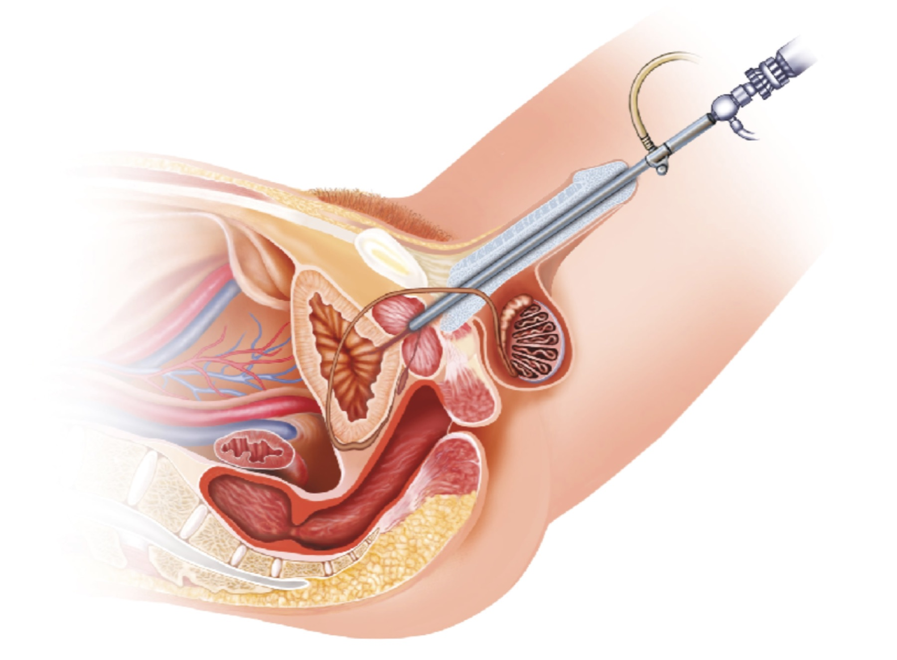
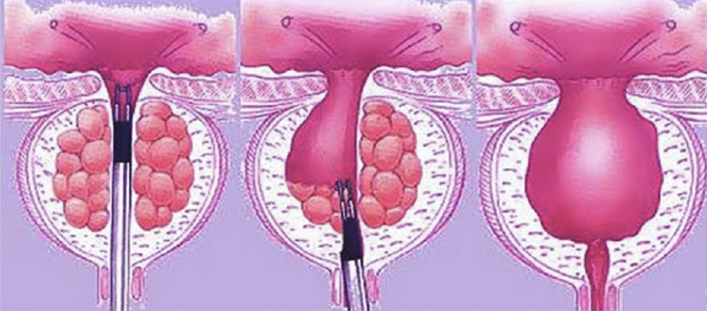
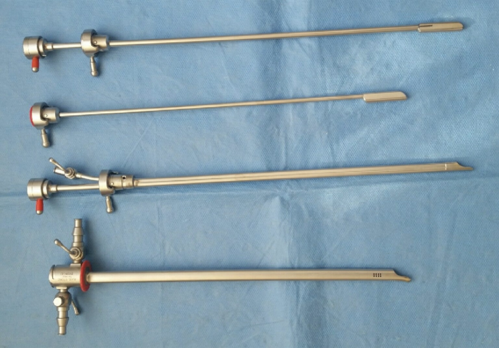
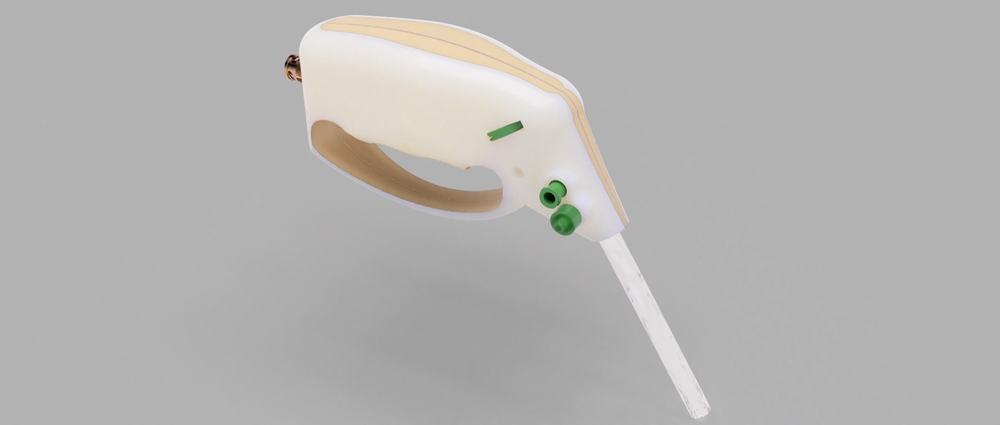
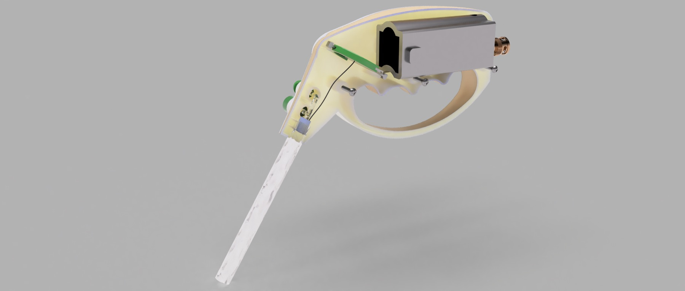
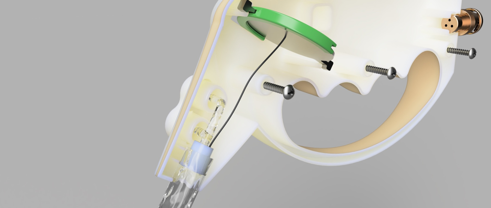
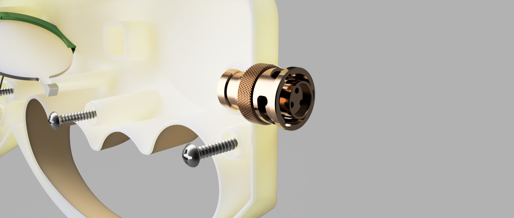
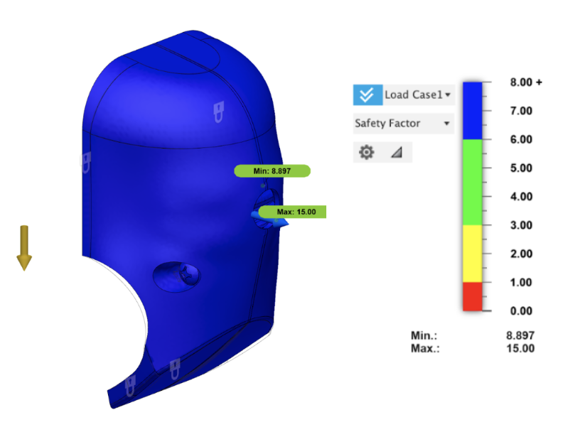
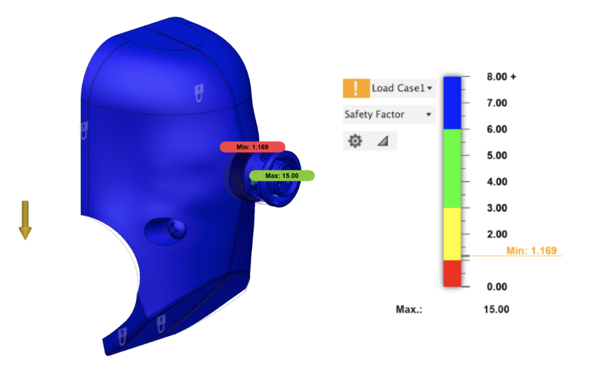

Redesigning the Humble Cystoscope
In my senior year at Duke, I took a course called Advanced Design and Manufacturing, in which I learned how to design a medical device from start to finish. We were assigned a semester-long project to design a better cystoscope based on stakeholder needs. A cystoscope is a device which is commonly used to view male patients’ urethras and ablate extra tissue that’s blocking the urinary tract.


The parts of a current cystoscope are shown below. Each of the metal rods slides inside one another to create a long pipeline, which feeds the tip of the catheter with water for ablation and electricity for an imaging camera. The current design is intimidating for patients and finicky for surgeons. A product redesign would yield a more patient-friendly and ergonomic solution to the biomedical problem.

I decided I wanted my cystoscope to have a large grip for the operator to hold and easily articulate during the surgery. I aimed to create a friendlier design using organic, soothing colors to put the patient at ease.

In my first iteration of the device, I had no alignment features, internal functional components, nor electrical connector. In my later iterations, I added these features to make the device functional. I also added alignment features around screw holes and considered design for manufacturability and assembly (DFM&A). This involved performing several draft analyses to ensure the parts were injection mold manufacturable.



I learned about the importance of standards in designing medical devices, and paid particular attention to IEC 60601 and IEC 60320-1, which outline the electrical requirements of medical devices. I ran a finite element analysis (FEA) to confirm that the device was compliant with the requirements of this standard when the electrical cord is pulled with a force of 10 N.

I was happy with the results of this study, which showed that I had a safety factor of at least 8 when the appropriate force is applied. I ran more FEA simulations at higher forces until the lower bound of the safety factor approached 1, indicating a near failure of the device. This occurred near the electrical connector at a force of 50 N, which is compliant with IEC 60601.

The Advanced Design and Manufacturing course was very helpful to my development as a product design engineer. I learned industry standards in regards to:
-
-
- Product ideation and sketching
- Engineering drawings
- CAD renderings and animations
- Injection mold manufacturing
- Standards compliance
- Finite element analysis
- Labor, burden, and materials analysis
-
These skills will certainly serve me well as a designer entering the medical device industry.